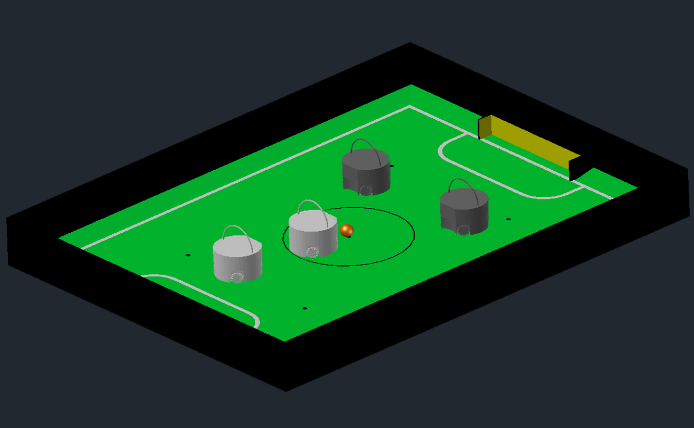
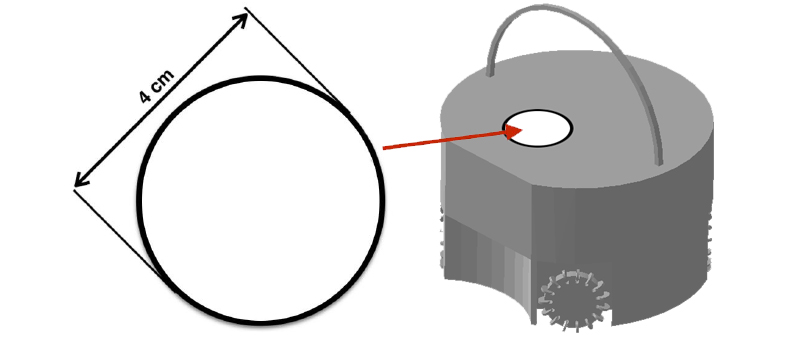

| Este documento é uma tradução e adaptação das regras oficiais da RoboCupJunior Soccer, direcionada à liga brasileira (RoboCupJunior Brasil). Em caso de divergência, a versão oficial em inglês tem prioridade. |
Estas são as regras de Soccer para a RoboCupJunior 2026, adaptadas das regras gerais da RoboCupJunior Soccer League para uso no contexto brasileiro. A versão em inglês das regras oficiais tem prioridade sobre qualquer tradução.
As equipes são aconselhadas a verificar o site RoboCupJunior Soccer [1] e o fórum Soccer [2] para obter os procedimentos e requisitos para a competição internacional. Para competições locais, regionais e super-regionais, consulte os organizadores dos torneios. Cada equipe é responsável por verificar a versão mais recente das regras antes de cada competição. Equipes devem solicitar esclarecimentos no Fórum sempre que necessário. [3]
| As equipes são encorajadas a entrar em contato com a comunidade RoboCupJunior em nosso Discord. Mostre o que você está trabalhando, faça perguntas ou participe das discussões semanais sobre futuras regras e design da liga. [4] Você também pode contatar o Comitê da Soccer League diretamente por e-mail [5] |

Prefácio
No desafio RoboCupJunior Soccer, equipes de jovens engenheiros projetam, constroem e programam dois robôs móveis totalmente autônomos para competir contra outro time em partidas. Os robôs devem detectar uma bola e marcar em um gol codificado por cores em um campo especial que se assemelha a um campo de futebol humano.
Para ter sucesso, os participantes devem demonstrar habilidade em programação, robótica, eletrônica e mecatrônica. Espera-se também que as equipes contribuam para o avanço da comunidade como um todo, compartilhando suas descobertas com outros participantes e praticando o bom espírito esportivo, independentemente da cultura, idade ou resultado da competição. Espera-se que todos compitam, aprendam, se divirtam e cresçam.
A RoboCupJunior Soccer consiste em duas sub-ligas: Soccer Vision (anteriormente Soccer Open) [6] e Soccer Infrared (anteriormente Soccer Lightweight) [7]. Este documento cobre apenas as sub-ligas Soccer Vision e Soccer Infrared. As principais diferenças entre as sub-ligas Soccer Vision e Soccer Infrared são:
| Grande parte do ranking geral é determinada pelas categorias avaliadas. Há pontos para documentação, desempenho em entrevista, etc. |
| A liga Soccer está planejando aumentar o tamanho das equipes para 5. A partir de 23 de abril de 2026, está confirmado que um tamanho máximo de 4 membros por equipe será permitido na competição de Incheon. Recomendamos equipes de 5 para Super-Regionais e onde os organizadores acharem prático também para competições regionais e locais. Consulte os organizadores de cada torneio que participar sobre o tamanho de equipe que podem acomodar. Informações de contato para o campeonato mundial: robocupjunior-soccer [ at\] robocup [ dot\] org |
1. Regras Gerais da RoboCupJunior Internacional 2026
Estas regras se aplicam à competição internacional da RoboCupJunior. No entanto, torneios regionais, Super-Regionais e locais podem ter variações ou adaptações nestas regras para atender às suas necessidades específicas de competição. É importante verificar com os organizadores dos torneios em que você está participando para confirmar quais regras exatas serão utilizadas.
Se as equipes tiverem dúvidas sobre qualquer aspecto das Regras Gerais ou das Regras Específicas da Liga, elas são encorajadas a consultar o Fórum Oficial da RoboCupJunior para esclarecimentos: https://junior.forum.robocup.org/
Para perguntas sobre quaisquer regras ou sobre a RoboCupJunior em geral, as equipes também podem entrar em contato com a comunidade RoboCupJunior pelo Servidor Discord Oficial.
1.1. Requisitos das Equipes
1.1.1. Tamanho da Equipe
Tamanho Mínimo da Equipe: As equipes devem ser compostas por pelo menos 2 membros.
Tamanho Máximo da Equipe:
-
Ligas de Soccer e Resgate: 4 membros.
-
Liga OnStage: 5 membros.
Competições regionais e Super-Regionais podem definir seus próprios tamanhos de equipe dependendo da capacidade do local e das variações regionais. As equipes que participam da competição Internacional poderão ter apenas o número máximo de participantes registrados na equipe classificada.
Membros e Robôs Compartilhados: Nenhum membro ou robô pode ser compartilhado entre equipes.
1.1.2. Supervisão da Equipe
Requisito de Mentor Júnior: Cada equipe Júnior deve ter pelo menos um Mentor Júnior registrado e presente com a equipe.
Mentores e Pais/Acompanhantes são responsáveis por supervisionar suas equipes e manter o dever de cuidado e bem-estar de seus membros, conforme apropriado para as regulamentações de sua região de origem. Qualquer preocupação referente ao bem-estar dos membros da equipe deve ser comunicada imediatamente aos organizadores do evento.
O Mentor Júnior deve estar presente durante todos os eventos oficiais de competição com sua equipe. Eles não devem interagir de maneira impositiva com equipes, robôs, juízes ou o processo de julgamento. Qualquer incidente considerado inadequado será tratado pelos organizadores do evento e pode levar a ações disciplinares.
1.1.3. Requisitos de Idade
Membros Estudantes Júnior: Devem ter entre 14 e 19 anos de idade em 1º de julho do ano da competição.
Mentores Júnior e Pais/Acompanhantes: Devem ter 19 anos ou mais em 1º de julho do ano da competição.
1.1.4. Membros da Equipe
Ligas de Entrada: As ligas de entrada da RoboCupJunior e outras divisões "Primárias" (onde a idade mínima pode variar) não são realizadas na competição internacional, mas estão presentes em muitas regiões e torneios Super-Regionais.
Funções Técnicas: Todo membro da equipe deve ter uma função técnica definida (mecânica/design, elétrica/sensoriamento, software, etc.) e deve ser capaz de explicar sua função durante o julgamento técnico.
1.2. Processo de Qualificação para a Equipe Internacional
-
Para se qualificar para a competição Internacional, o Representante Regional de cada região completará o Processo de Alocação de Vagas no início do ano da competição. Os Representantes Regionais podem ser encontrados no Site Oficial.
-
Após o torneio classificatório local da região, o Representante Regional atribuirá as vagas. Uma vez confirmadas pelos organizadores da RoboCupJunior, as equipes qualificadas serão convidadas a se registrar pelo sistema oficial de registro da Federação RoboCup.
-
O processo de qualificação difere dependendo do tamanho de cada região, mas a alocação de vagas deve refletir fortemente os resultados das competições regionais.
-
Se uma região não utilizar ou liberar suas vagas alocadas, os Representantes Regionais podem solicitar vagas adicionais durante uma fase posterior do processo de alocação.
1.3. Requisitos dos Robôs
1.3.1. Comunicação do Robô
Comunicação Permitida: A comunicação entre robôs durante o jogo é permitida, desde que utilize o espectro de 2,4 GHz e sua potência de saída não exceda 100 mW EIRP (Potência Radiada Isotropicamente Efetiva) em nenhuma circunstância.
Responsabilidade: As equipes são responsáveis por gerenciar a comunicação de seus robôs. A disponibilidade do espectro não é garantida.
Comunicação entre Componentes: A comunicação entre componentes do mesmo robô é permitida.
Adaptabilidade da Liga: Cada liga pode modificar as regras de comunicação do robô para garantir que atendam aos seus requisitos específicos.
1.3.2. Requisitos de Segurança e Energia
Energia Elétrica:
-
Os robôs não devem usar energia da rede elétrica.
-
Tensão máxima permitida: 48V CC ou 25V CA RMS (Valor Quadrático Médio).
-
A tensão deve ser facilmente medida durante as inspeções, e os pontos de medição devem ser cobertos para segurança ou projetados com considerações de segurança.
Segurança das Baterias:
-
As baterias de lítio devem ser armazenadas em bolsas de segurança, e o carregamento deve ser supervisionado pelos membros da equipe nas áreas de competição.
-
As equipes devem seguir os protocolos de segurança, incluindo procedimentos de manuseio de incêndio em baterias e evacuação.
Design de Segurança do Robô:
-
Gerenciamento de Energia: Baterias seguras, fiação segura e funcionalidade de parada de emergência.
-
Segurança Mecânica: Sem bordas afiadas, pontos de aperto ou outros riscos. Os atuadores devem ser apropriados para o tamanho e a função do robô.
-
Comportamento Perigoso: As equipes devem reportar comportamentos potencialmente perigosos dos robôs pelo menos duas semanas antes de um evento da RoboCupJunior.
1.4. Requisitos de Documentação e Compartilhamento
1.4.1. Pôsteres das Equipes da RoboCupJunior
Finalidade: Os pôsteres são uma ferramenta para compartilhar designs de robôs e insights com juízes, equipes e o público. Os pôsteres serão afixados em áreas públicas da competição no local e cópias digitais ou fotografias serão compartilhadas pela RoboCupJunior após a competição.
Tamanho: Os pôsteres não devem ser maiores que o tamanho A1 (60 x 84 cm).
Conteúdo: Os pôsteres devem resumir os documentos de design e apresentar as capacidades do robô em um formato envolvente.
1.4.2. Vídeo de Descrição Técnica (Ver Documentação da Liga)
Conteúdo:
-
Demonstração Robótica: Mostrar sistemas de robôs totalmente funcionais para destacar aspectos técnicos.
-
Processo de Design: Explicar as escolhas de design e as abordagens de resolução de problemas da equipe.
-
Apresentação: Clara e de alta qualidade, explicando técnicas inovadoras ou incomuns.
-
Inovação e Sustentabilidade: Destacar novas tecnologias e práticas sustentáveis.
Submissão: As diretrizes especificarão a duração do vídeo e os prazos por liga.
1.4.3. Compartilhamento de Recursos da Equipe
Compartilhamento: Os materiais submetidos pelas equipes como parte da submissão de documentação serão compartilhados nos repositórios do GitHub para as ligas: https://github.com/robocup-junior
Crédito: As equipes devem creditar os criadores de trabalhos externos e respeitar as regras de licenciamento. O foco deve permanecer no crescimento pessoal e no aprendizado.
1.4.4. Diretrizes sobre Plágio
Uso de Código Externo: As equipes têm permissão para usar código externo, mas devem creditar os criadores originais.
Prioridade de Aprendizado: As equipes devem priorizar o aprendizado e não usar soluções completas de terceiros. Sempre preste atenção às regras de licenciamento.
1.4.5. Lista de Materiais (BOM)
Submissão: As equipes devem enviar uma BOM (Lista de Materiais) listando os principais componentes e materiais utilizados.
Detalhes: A BOM deve incluir:
-
Nome/descrição do componente (ex.: número da peça).
-
Fornecedor/fonte do componente (incluindo PCBs/componentes usinados).
-
Status (novo/reutilizado).
-
Kit ou construído sob medida.
-
Preço.
Modelo: Um modelo padronizado de BOM será fornecido com as submissões de documentação da liga para a competição internacional.
1.5. Espírito e Comportamento
1.5.1. Comportamento
Espera-se que todos os participantes se comportem de maneira adequada, sendo atenciosos e educados, especialmente, mas não somente, em relação a outros participantes, voluntários, árbitros e organizadores de todas as Ligas Júnior e Principais, bem como ao local do evento.
1.5.2. Código de Conduta
Todos os organizadores, voluntários, membros de equipes, mentores, apoiadores e visitantes devem respeitar o Código de Conduta da Federação RoboCup. Qualquer situação que não atenda ao código de conduta deve ser reportada a um membro da organização da Federação RoboCup e será investigada.
1.5.3. Mentoria e Assistência no Local
O apoio de outras equipes, mentores, professores, pais, patrocinadores, comunidades na internet etc. é uma parte fundamental de como as equipes aprendem e crescem.
Para garantir uma competição justa e maximizar o aprendizado, é necessário que nenhum apoio recebido realize o trabalho de competição pela equipe. Um bom indicativo é a capacidade da equipe de explicar não apenas o que os componentes dos seus robôs fazem, mas também como eles fazem.
1.5.4. Equipes no Local
-
Durante a competição, apenas os membros oficiais da equipe (máximo 4/5 dependendo da liga) podem representar a equipe no registro, dia de instalação e ter acesso às áreas de competição para rodadas e entrevistas.
-
Deve haver pelo menos 2 membros da equipe presentes no local, a menos que a equipe possa apresentar evidências de circunstâncias atenuantes, incluindo comprovante de viagem para outros membros. Equipes em que apenas um participante comparecer ao local poderão competir, mas não serão elegíveis para finais ou prêmios.
-
É responsabilidade das equipes garantir que os membros estejam presentes no horário e local corretos para todas as atividades programadas.
-
As equipes não têm permissão para se comunicar com ou receber ajuda virtualmente de partes externas com a intenção de impactar o desempenho da equipe durante as áreas de competição. A comunicação virtual inclui, mas não se limita a, chamadas telefônicas prolongadas, videochamadas, controle remoto de desktop etc.
-
Qualquer equipe que violar estas regras poderá estar sujeita a ações disciplinares.
-
Recomenda-se que as equipes busquem ajuda de outras equipes ou organizadores caso estejam enfrentando algum problema no local.
1.5.5. Violações
Equipes, Mentores/Apoiadores ou Membros de Equipes que repetidamente se comportem de maneira inaceitável ou em violação às Regras Gerais ou das Ligas poderão ser desqualificados do torneio e solicitados a deixar o local.
Mudanças nas Regras RoboCupJunior Soccer 2025
As mudanças nas regras desenvolvidas pelo Comitê da Liga de Soccer em cooperação com a Comunidade RoboCup Junior Soccer (por favor, continue postando ideias para o futuro a qualquer momento) visam melhorar a jogabilidade.
Alterações detalhadas estão listadas abaixo e vinculadas ao local correspondente nas regras.
2. JOGABILIDADE
2.1. Procedimento de jogo e duração de uma partida
As partidas RCJ Soccer consistem em dois times de robôs jogando futebol um contra o outro. Cada equipe tem dois robôs autônomos. O jogo será composto por dois tempos. A duração de cada tempo é de 10 minutos. Haverá um intervalo de 5 minutos entre os tempos.
Espera-se que as equipes estejam em campo 5 minutos antes do início do jogo. Estar na mesa de inspeção não conta a favor desse limite de tempo. As equipes que se atrasarem para o início do jogo podem ser penalizadas em um gol a cada 30 segundos, a critério do árbitro.
O placar final do jogo será limitado para que haja no máximo 10 gols de diferença entre o time perdedor e o time vencedor.
2.2. Reunião pré-jogo
No início do primeiro tempo do jogo, um árbitro lançará uma moeda. A equipe mencionada primeiro no sorteio deve chamar a moeda. O vencedor do sorteio pode escolher para qual extremidade chutar ou chutar primeiro. O perdedor do sorteio escolhe a outra opção. Após o primeiro tempo, as equipes trocam de lado. A equipe que não deu o pontapé inicial no primeiro tempo dará o pontapé inicial para iniciar o segundo tempo.
Durante a reunião pré-jogo, o(s) árbitro(s) pode(m) verificar se os robôs são capazes de jogar (ou seja, se eles são pelo menos capazes de seguir e reagir à bola). Se nenhum dos robôs for capaz de jogar, o jogo não será disputado e zero gols serão concedidos a ambas as equipes.
2.3. Pontapé inicial
Cada tempo do jogo começa com um pontapé inicial. Todos os robôs devem estar localizados em seu próprio lado do campo. Todos os robôs devem estar parados. A bola é posicionada por um árbitro no centro do campo.
A equipe que dá o pontapé inicial coloca seus robôs no campo primeiro.
A equipe que não deu o pontapé inicial colocará seus robôs no lado defensivo do campo. Todos os robôs da equipe que não está dando o pontapé inicial devem estar a pelo menos 30 cm de distância da bola (fora do círculo central).
Os robôs não podem ser colocados fora dos limites. Os robôs não podem ser reposicionados depois de colocados, exceto se o árbitro solicitar um ajuste de posicionamento para garantir que os robôs estejam posicionados corretamente dentro do campo.
Ao comando do árbitro (geralmente por apito), todos os robôs serão iniciados imediatamente. Quaisquer robôs iniciados antecipadamente serão removidos do campo pelo árbitro e considerados danificados.
Antes de um pontapé inicial, todos os robôs danificados ou fora dos limites têm permissão de retornar ao campo de jogo imediatamente se estiverem prontos e totalmente funcionais.
2.3.1. Pontapé inicial neutro
Um pontapé inicial neutro é o mesmo descrito em Rule 2.3, “Pontapé inicial” com uma pequena alteração: todos os robôs devem estar a pelo menos 30 cm de distância da bola (fora do círculo central).
2.4. Pontuação
Um gol é marcado quando a bola atinge ou toca a parede do fundo do gol. Os gols marcados por qualquer robô têm o mesmo resultado final: concedem um gol para o time do lado oposto. Após um gol, o jogo será reiniciado com um pontapé inicial da equipe que sofreu o gol.
2.5. Movimento da bola
Um robô não pode segurar a bola. Segurar a bola é definido como assumir o controle total dela, removendo todos os graus de liberdade. Exemplos de segurar a bola incluem fixar a bola ao corpo do robô, cercar a bola usando o corpo do robô para impedir o acesso de outros, encircular ou prender a bola com qualquer parte do corpo do robô. Se a bola não rolar enquanto um robô estiver se movendo, é uma boa indicação de que a bola está presa.
A única exceção é o uso de um tambor giratório (um "driblador") que imprime um giro dinâmico para trás na bola para mantê-la em sua superfície.
Outros jogadores devem poder acessar a bola.
A bola precisa permanecer dentro dos limites do campo, conforme definido pelas paredes. Se um robô mover a bola para fora do campo (ou seja, além das paredes ou acima de sua altura), será considerado danificado. (Rule 2.9, “Robôs danificados”)
Qualquer robô deve se aproximar e tocar a bola quando ela for colocada no ponto neutro mais próximo. Deve fazer isso antes que a falta de progresso seja sinalizada. Quando estiver em seu próprio lado do campo, qualquer robô deve ser capaz de mover a bola do ponto neutro mais próximo para o lado adversário. Se um robô específico não agir desta forma, os árbitros poderão considerá-lo danificado a seu critério. (Veja Robôs Danificados.) Esta regra não se aplica se o robô for impedido de detectar ou jogar a bola pelo adversário.
2.6. Dentro da Área de Pênalti (Empurrão e Defesa Múltipla)
Nenhum robô pode estar totalmente dentro da área de penalidade. Como as áreas de penalidade são marcadas com uma linha branca, a regra de Fora dos Limites se aplica. (Rule 2.8, “Fora dos limites”)
Se dois robôs da mesma equipe estiverem pelo menos parcialmente em uma área de penalidade, o robô mais distante da bola será movido para o ponto neutro desocupado mais distante imediatamente. Se isso ocorrer repetidamente, um robô poderá ser considerado danificado a critério do árbitro. (Rule 2.9, “Robôs danificados”)
Se um robô atacante e um defensor se tocarem enquanto pelo menos um deles estiver pelo menos parcialmente dentro da área de penalidade, e pelo menos um deles tiver contato físico com a bola, isso pode ser chamado de "empurrão" a critério do árbitro. Neste caso, a bola será movida para o ponto neutro desocupado mais distante imediatamente.
Se um gol for marcado como resultado de uma situação de "empurrão", ele não será concedido.
* Se o empurrão e a defesa múltipla ocorrerem simultaneamente, os árbitros chamarão e resolverão primeiro a situação de empurrão, depois a defesa múltipla.*
2.7. Falta de progresso
A falta de progresso ocorre se não houver progresso no jogo por um período razoável de tempo e a situação provavelmente não mudar. Situações típicas de falta de progresso são quando a bola está presa entre os robôs, quando não há mudança nas posições da bola e dos robôs, ou quando a bola está além da detecção ou alcance de todos os robôs no campo.
Após uma contagem visível e em voz alta [11],
um árbitro informará falta de progresso e moverá a bola para o ponto neutro
desocupado mais próximo. Se isso não resolver a falta de progresso, o árbitro poderá
chamar falta de progresso novamente e mover a bola para um ponto neutro diferente.
2.8. Fora dos limites
Se um robô tocar uma parede ou se mover completamente para dentro da área de penalidade,
será chamado fora dos limites. Quando essa situação ocorrer, o robô receberá uma
penalidade de um minuto e será removido do campo. Não há interrupção do tempo para o
jogo em si. O robô pode retornar se um pontapé inicial ocorrer antes que a penalidade
tenha decorrido.
A penalidade de um minuto começa quando o robô é removido do jogo. Além disso, qualquer gol marcado pela equipe penalizada enquanto o robô penalizado estiver em campo não será concedido. Os robôs fora dos limites podem ser consertados se a equipe precisar, conforme descrito em Rule 2.9, “Robôs danificados”.
Após o término da penalidade, o robô será colocado no ponto neutro desocupado mais distante da bola, de frente para seu próprio gol.
2.9. Robôs danificados
Se um robô for danificado, ele deve ser retirado do campo e deve ser consertado antes que possa jogar novamente. Mesmo que consertado, o robô deve permanecer fora de campo por pelo menos um minuto ou até o próximo pontapé inicial.
Alguns exemplos de robô danificado:
-
não responde à bola ou não consegue se mover (perdeu peças, energia, etc.).
-
move-se continuamente para dentro da área de penalidade ou para fora dos limites.
-
vira por conta própria.
Após ser consertado, o robô será colocado no ponto neutro desocupado mais distante da bola, de frente para seu próprio gol.
Somente o árbitro decide se um robô está danificado. Um robô só pode ser retirado ou devolvido com a permissão do árbitro.
Se ambos os robôs de uma mesma equipe forem considerados danificados no pontapé inicial, o jogo será pausado e a equipe restante receberá 1 gol a cada 30 segundos que os robôs adversários permanecerem danificados. Contudo, essas regras só se aplicam quando nenhum dos dois robôs da mesma equipe foram danificados como resultado de violação de regras pela equipe adversária.
Sempre que um robô for removido do jogo, seus motores devem ser desligados.
2.10. Interferência humana
Exceto para o pontapé inicial, a interferência humana das equipes (por exemplo, tocar os robôs) durante o jogo não é permitida, a menos que explicitamente permitida por um árbitro. A(s) equipe(s)/membro(s) da equipe infratores poderão ser desqualificados do jogo.
O(s) árbitro(s) pode(m) ajudar robôs a se soltarem se a bola não estiver sendo disputada próxima a eles e se a situação tiver sido criada a partir da interação normal entre robôs (ou seja, não foi uma falha de projeto ou programação do robô sozinho). O(s) árbitro(s) puxará(ão) os robôs apenas o suficiente para que possam se mover livremente novamente.
2.11. Interrupção do Jogo
Em princípio, um jogo não será interrompido.
Um árbitro pode interromper o jogo se houver uma situação no campo ou ao redor dele que o árbitro queira discutir com um oficial do torneio, ou se a bola apresentar defeito e uma substituta não estiver prontamente disponível.
Quando o árbitro interromper o jogo, todos os robôs devem ser parados e permanecer no campo sem serem tocados. O árbitro decidirá se o jogo será continuado/retomado a partir da situação em que foi interrompido ou mediante um pontapé inicial neutro.
3. ROBÔS
3.1. Interferência
Robôs não podem ser coloridos de laranja, amarelo ou azul para evitar interferência. Peças laranja, amarelas ou azuis usadas na construção do robô devem ser ocultadas por outras partes para não serem percebidas por outros robôs, ou devem ser cobertas com tinta ou fita de cor neutra.
Robôs não devem produzir interferência magnética em outros robôs no campo.
Robôs não devem produzir luz visível que possa impedir a equipe adversária de jogar quando colocados em uma superfície plana. Qualquer parte do robô que produza luz que possa interferir no sistema de visão do robô adversário deve ser coberta. Para regulamentações específicas da sub-liga Soccer Infrared, veja Rule 6.2.2, “Interferência infravermelha”
Espera-se que os robôs sejam capazes de lidar com qualquer cor visível acima das paredes (por exemplo, camisetas azuis, amarelas, verdes ou laranja), seja por hardware (por exemplo, limitando o campo de visão para não olhar para cima) ou por software (por exemplo, mascarando a imagem de entrada).
O árbitro pode interromper um jogo em andamento se qualquer tipo de interferência dos espectadores for suspeita (emissores IR, flashes de câmera, celulares, rádios, computadores, etc.).
Uma equipe que afirmar que seu robô está sendo afetado pelo robô da outra equipe deve fornecer prova ou evidência da interferência. Qualquer interferência precisa ser confirmada pelos organizadores do torneio se uma reclamação for feita pela outra equipe.
3.2. Controle e Comunicação
O uso de controle remoto de qualquer tipo não é permitido durante a partida. Os robôs devem ser controlados de forma autônoma.
Para pelo menos no campeonato mundial (consulte outros organizadores de competições) [12] é obrigatório o uso de um Módulo de Comunicações para os árbitros controlarem os robôs. Veja [international-competition-specifics]
3.3. Agilidade
Os robôs devem ser construídos e programados de forma que seu movimento não seja limitado a apenas uma dimensão (definida como um único eixo, como mover-se apenas em linha reta). Eles devem se mover em todas as direções, por exemplo, girando.
3.4. Alça
Todos os robôs devem ter uma alça estável e facilmente perceptível para segurá-los e levantá-los. A alça deve ser facilmente acessível e permitir que o robô seja levantado a partir de pelo menos 5 cm acima da estrutura mais alta do robô. Deve haver um espaço mínimo de 5 cm para as mãos entre a parte não-alça mais alta do robô e a alça.
As dimensões da alça podem exceder o limite de altura do robô, mas a parte da alça que excede esse limite não pode ser usada para montar componentes do robô.
O peso do robô inclui o da alça.
3.5. Marcadores Superiores
Um robô deve ter marcações para ser distinguido pelo árbitro. Cada robô deve ter um círculo de plástico branco com diâmetro mínimo de 4 cm montado horizontalmente no topo. Este círculo branco será usado pelo árbitro para escrever números nos robôs com marcadores, portanto os círculos brancos devem ser acessíveis e visíveis. Os marcadores superiores não precisam estar dentro do limite de tamanho do robô.
Antes do jogo, o árbitro designará os números para cada robô e os escreverá no círculo branco superior. Robôs sem o círculo branco superior não estão aptos para jogar.

3.6. Violações
Robôs que não atendem às especificações/regulamentos (veja Rule 6.2, “Regulamentos”) não estão autorizados a jogar, a menos que estas regras especifiquem o contrário.
Se violações forem detectadas durante um jogo em andamento, a equipe poderá ser desqualificada daquele jogo.
Se violações semelhantes ocorrerem repetidamente, a equipe poderá ser desqualificada do torneio.
3.7. Especificações de materiais
Especificações detalhadas da bola e dos campos podem ser encontradas na nota de rodapé [13].
3.8. Mudança de Bola da Liga Soccer Infrared 2026
A partir deste ano (2026), o Soccer Infrared está usando uma nova bola IR. A principal diferença desta bola é a mudança de tamanho de 74 mm para 42 mm de diâmetro, o mesmo tamanho da bola de golfe da sub-liga Soccer Vision.
Esta bola é Open Source, portanto qualquer pessoa pode produzi-la a partir dos arquivos e instruções na página do GitHub: https://github.com/robocup-junior/ir-golf-ball .
Se você ou alguém que conhece puder ajudar produzindo ou distribuindo bolas para uma ou mais regiões, o Comitê de Soccer está interessado em ajudar a viabilizar isso e em listar você como fornecedor de bolas no site oficial. Entre em contato pelo Fórum, Discord ou e-mail
3.9. Bolas do torneio
As bolas para o torneio devem ser disponibilizadas pelos organizadores do torneio. Os organizadores do torneio não são responsáveis por fornecer bolas para treino.
4. CÓDIGO DE CONDUTA
4.1. Jogo Limpo
Espera-se que o objetivo de todas as equipes seja jogar uma partida justa e limpa de futebol robótico. Espera-se que todos os robôs sejam construídos com consideração pelos outros participantes.
Os robôs não são permitidos a causar interferência deliberada ou danos a outros robôs durante o jogo normal.
Os robôs não são permitidos a causar danos ao campo ou à bola durante o jogo normal.
Um robô que cause danos poderá ser desqualificado de uma partida específica a critério do organizador do torneio.
Humanos não são permitidos a causar interferência deliberada com robôs ou danos ao campo ou à bola.
5. RESOLUÇÃO DE CONFLITOS
5.1. Árbitros
O(s) árbitro(s) é(são) responsável(is) por tomar decisões em relação ao jogo, de acordo com estas regras.
Durante o jogo, as decisões tomadas pelo(s) árbitro(s) são definitivas.
Apenas o(s) membro(s) da equipe no banco têm mandato para falar livremente com o(s) árbitro(s).
Ao final do jogo, os resultados tornam-se definitivos com as assinaturas de ambas as equipes. Disputas devem ser resolvidas antes da assinatura.
5.2. Esclarecimento de regras
Esclarecimentos de regras podem ser feitos por membros dos organizadores do torneio e do Comitê da Liga de Soccer, se necessário, inclusive durante um torneio.
5.3. Modificação de regras
Se circunstâncias especiais, como problemas imprevistos ou capacidades de um robô, ocorrerem, as regras podem ser modificadas pelos organizadores do torneio, se necessário, inclusive durante um torneio.
5.4. Especificidades da competição
Cada competição (desde local até internacional) pode ter regras adaptadas e especificidades adicionadas (pontuação, entrevistas, modos de torneio, variações de regras, etc.). Verifique com os organizadores de cada torneio do qual participar. Competições regionais e super-regionais possuem regras baseadas na regra oficial e podem divergir um pouco desta versão brasileira.
6. REGULAMENTOS DA LIGA
6.2. Regulamentos
6.2.1. Dimensões
Os robôs serão medidos em posição ereta com todas as partes estendidas. As dimensões de um robô não devem exceder os seguintes limites:
sub-liga |
Soccer Vision [19] |
Soccer Infrared [20] |
tamanho [0] |
18,0 cm |
22,0 cm |
altura |
18,0 cm |
22,0 cm |
peso |
Sem limite |
1500g
[21] |
zona de captura de bola |
1,5 cm |
1,5 cm
[22] |
| [0] O robô deve caber suavemente em um cilindro deste diâmetro. Estar 3 mm abaixo do limite de tamanho e 50 g abaixo do limite de peso geralmente tornará as inspeções mais tranquilas. |
A zona de captura de bola é definida como qualquer espaço interno criado quando uma régua é colocada sobre os pontos salientes de um robô. Isso significa que a bola não deve entrar no casco convexo do robô por mais que a profundidade especificada. Além disso, deve ser possível para outro robô tomar posse da bola.
6.2.2. Interferência infravermelha
SOMENTE PARA A LIGA INFRARED: Componentes projetados para emitir IR (por exemplo, ToF, LiDAR, sensores de distância IR, LEDs/LASERs IR, etc.) não são permitidos e os organizadores do torneio exigirão que tais dispositivos sejam removidos ou cobertos.
6.2.3. Limitações
Um robô pode usar qualquer número de câmeras sem restrições em lentes, peças ópticas, sistemas ópticos e campo de visão total. Os componentes podem ser obtidos de qualquer forma que a equipe considerar adequada.
A força do chutador está sujeita a verificação de conformidade a qualquer momento durante a competição. Durante o jogo, um árbitro pode testar a potência do chutador [23] no campo antes de cada tempo, quando um robô danificado retornar ao campo ou quando o jogo estiver prestes a ser reiniciado após um gol. Veja Appendix A, Procedimentos de Medição de Potência do Chutador para mais detalhes.
6.2.4. Inspeções
Os robôs devem ser inspecionados e certificados todos os dias antes do primeiro jogo. Os organizadores do torneio podem solicitar outras inspeções, se necessário, incluindo inspeções aleatórias que podem ocorrer a qualquer momento.
7. COMPETIÇÃO
7.1. Entrevistas
Durante a competição, os organizadores do torneio podem organizar entrevistas com as equipes durante o Dia de Configuração do evento. Isso significa que as equipes precisam estar presentes desde cedo neste dia.
Detalhes sobre o que é exigido e o que esperar das entrevistas podem ser encontrados no documento de pontuação.
7.2. Desafios Técnicos
Inspirado pelas ligas principais e pela necessidade de avanço tecnológico adicional das ligas, o Comitê da Liga Soccer realiza os chamados Desafios Técnicos. Novos desafios são adicionados a cada ano e são desconhecidos até durante a Competição.
A ideia desses desafios é dar às equipes a oportunidade de demonstrar diversas habilidades de seus robôs que podem não ser percebidas durante os jogos regulares. Além disso, o Comitê da Liga Soccer visa esses desafios como um espaço para testar novas ideias que podem se tornar futuras regras ou moldar a competição de outras formas.
Qualquer equipe RoboCupJunior Soccer estará apta a tentar esses desafios.
7.3. Mais informações sobre a Competição
Todas as equipes qualificadas para a competição devem compartilhar seus projetos, tanto hardware quanto software, com todos os participantes presentes e futuros. Essas equipes também devem enviar um portfólio digital antes da competição. Mais detalhes sobre como será fornecido pelo Comitê da Liga Soccer, que atua como organizador do torneio para a competição.
Durante os dias de competição da competição (bem como antes do evento), os membros das equipes são responsáveis por verificar todas as informações relevantes publicadas pelo Comitê da Liga Soccer ou qualquer outro oficial da RoboCup.
As equipes que competem na competição podem receber prêmios por seu desempenho. Esses prêmios são decididos e introduzidos pelo Comitê da Liga Soccer, que publica todos os detalhes necessários com antecedência ao evento real.
7.4. SuperTeam
A competição poderá incluir uma atividade SuperTeam, organizada como uma dinâmica paralela à competição principal. O objetivo é incentivar cooperação entre equipes, integração entre participantes e aplicação prática dos robôs em um contexto compartilhado.
As equipes SuperTeam serão formadas pela organização com base no ranking da competição, buscando distribuir as equipes de forma equilibrada. Cada SuperTeam será composto por duas equipes, e cada equipe participará com um robô em campo.
As partidas de SuperTeam utilizarão o mesmo campo, a mesma bola e as mesmas regras da competição principal, salvo adaptações específicas anunciadas pela organização antes do início da atividade.
A participação no SuperTeam não altera a classificação da competição principal e não gera classificação para outras competições. A premiação, quando houver, será realizada por meio de certificados.
Appendix A: Procedimentos de Medição de Potência do Chutador
Todos os chutadores dos robôs serão testados com a bola do torneio usada na sub-liga em que participam. A potência do chutador será medida por meio de um teste em campo. O ricocheteio nas paredes pode variar dependendo da construção do campo. As equipes devem garantir que possam ajustar a potência de seu chutador se necessário.
O teste é realizado da seguinte forma:
-
Posicione o robô dentro de um gol com o robô tocando a parede do fundo do gol.
-
Realize um chute em direção ao gol adversário.
-
O teste de potência do chute é aprovado se, após ricochetear no gol oposto, a bola não atingir a parede do fundo do gol a partir do qual o robô realizou o teste de potência do chute.
Appendix B: Checklist de Inspeção Técnica
Durante a inspeção técnica, poderão ser verificados os seguintes itens ou outros que o arbrito da partida julgar necessário:
-
Quantidade de robôs da equipe;
-
Dimensões máximas do robô;
-
Peso máximo do robô;
-
Altura e acessibilidade da alça;
-
Tensão nominal das baterias;
-
Proteção de baterias e circuitos;
-
Quantidade de motores de tração;
-
Identificação de motores auxiliares;
-
Zona de captura da bola;
-
Presença de partes amarelas ou azuis visíveis;
-
Presença de emissores infravermelhos que possam causar interferência;
-
Proteção de engrenagens, dribladores e partes móveis;
-
Funcionamento autônomo do robô;
-
Capacidade mínima de detectar e reagir à bola;
-
Teste do chutador, se houver;
-
Ausência de controle remoto durante a partida;
-
Conformidade geral com o código de conduta e construção estudantil.